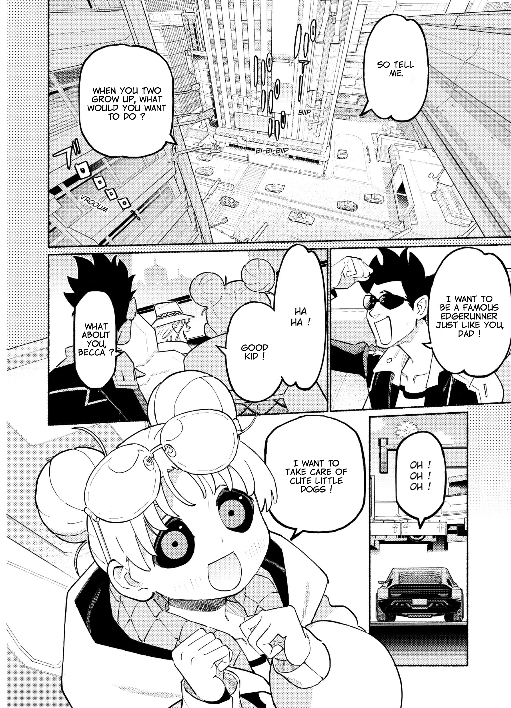

Cyberpunk: Edgerunners Madness
by Asano
Synopsis
Set in the dangerous streets of Night City, this cyberpunk story follows characters navigating a world ruled by powerful corporations, advanced technology, and ruthless gangs. As they struggle to survive in a city where people risk losing their humanity to cybernetic enhancements, they face violence, betrayal, and the high cost of chasing their dreams.
Chapter 1

Night City is a place where survival comes at a price. Amid towering skyscrapers, dangerous streets, and powerful corporations, people turn to cybernetic enhancements to gain an edge in a world that offers few second chances.
As ambition collides with desperation, the city's outcasts are forced to make difficult choices about loyalty, identity, and survival. In a world where technology can transform the human body, holding on to one's humanity may be the hardest battle of all.
— End of chapter —